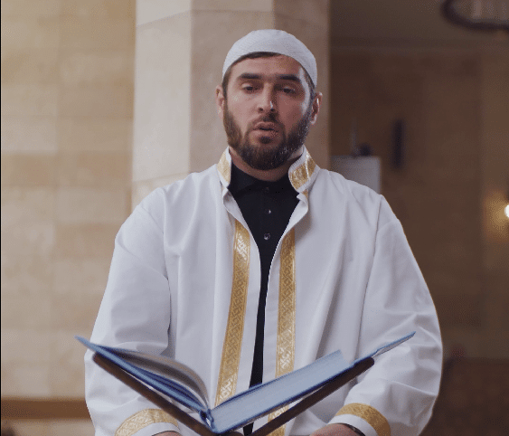
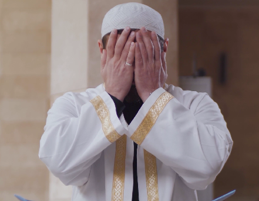
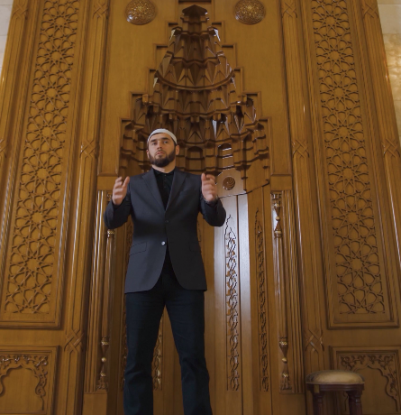
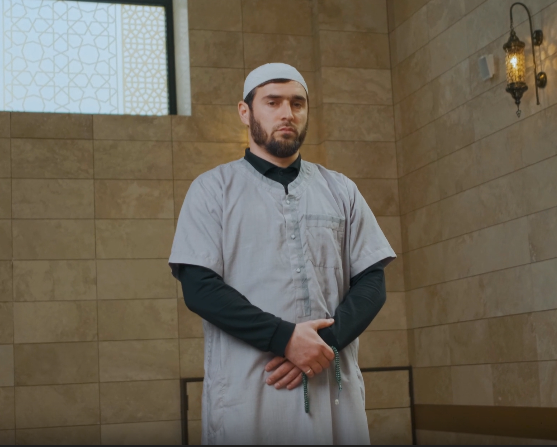

Povratak Vaše Voljene Osobe
Vidoviti Omar će učiniti da vam partner zauvek bude veran kroz moćne rituale koji deluju u roku od 3 dana . Saznaj Više

Vidoviti Omar Vraća Harmoniju u Vaš Život
Vidoviti Omar je priznat duhovni vođa specijalizovan za rešavanje životnih problema putem moćnih duhovnih rituala. Sa decenijama iskustva, Omar pomaže ljudima da se oslobode negativnih uticaja, pobede poroke, i vrate harmoniju u svoje živote. Bilo da se radi o vraćanju izgubljene ljubavi, zaštiti od uroka, ili prevazilaženju zavisnosti, Omar koristi drevne tehnike kako bi doneo mir i snagu onima kojima je to najpotrebnije. Njegova moć prelazi granice daljine – tu je da vam pomogne, bez obzira gde se nalazite.



Klikni na sliku za uveličan prikaz
×

Vrste pomoći koje Hodza Omar pruža
Zadovoljni klijenti
Halil - Berlin, Germany
Marina - Vienna, Austria
Milan - Zagreb, Hrvatska
Slavisa - Maribor, Slovenija
Natasa - Split, Hrvatska
Arija - Sarajevo, BiH